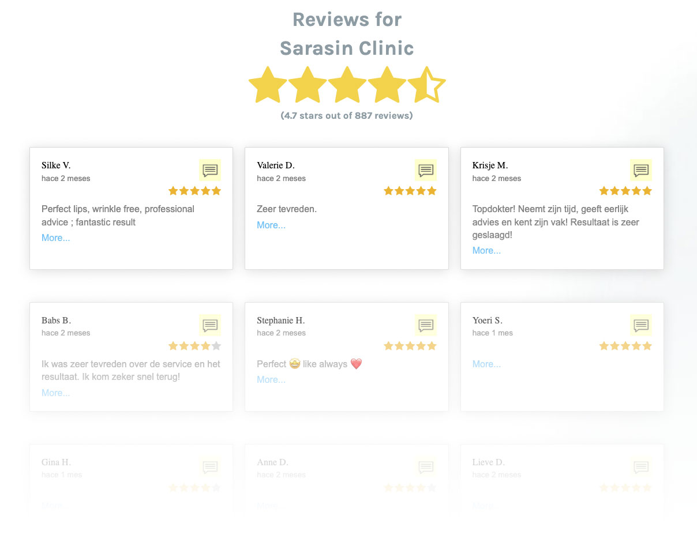
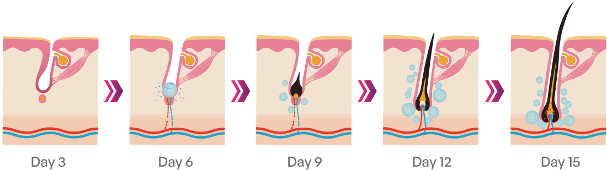

Analyse & advies
We bekijken je hoofdhuid, haarverlies en doelen. Samen kiezen we de zones, hoeveelheid en een passend protocol.
Haarverlies kan iedereen treffen. Hairfiller combineert hyaluronzuur en peptiden in een injecteerbare behandeling. Tijdens een persoonlijk consult beoordelen we of dit bij jouw hoofdhuid en situatie past.

Een behandeling begint met inzicht in jouw haarverlies.
We brengen een peptide-hyaluronzuurformule met fijne injecties in de gekozen zones aan. Deze is bedoeld om de conditie van de hoofdhuid en de omgeving van de haarfollikels te ondersteunen.
Haarverlies heeft verschillende oorzaken. Daarom bekijken we eerst je hoofdhuid, gezondheid en doelen. Het resultaat verschilt per persoon.
Hairfiller kan een optie zijn voor volwassenen met dunner wordend haar of diffuus haarverlies, ongeacht gender. De oorzaak en je medische voorgeschiedenis bepalen of dit passend is.
Plots of pleksgewijs haarverlies, pijn, ontsteking of littekens? Laat dit eerst medisch beoordelen.
We bekijken je hoofdhuid, haarverlies en doelen. Samen kiezen we de zones, hoeveelheid en een passend protocol.
Na ontsmetting brengen we kleine hoeveelheden met een fijne naald aan. Een sessie duurt ongeveer 15 minuten.
Vaak starten we met vier sessies, ongeveer twee weken uit elkaar. Vervolg en onderhoud hangen af van je reactie en doelen.
Haarkwaliteit verandert geleidelijk. Eerste veranderingen kunnen na enkele weken zichtbaar zijn; we evalueren vaak rond drie maanden. Wat haalbaar is, hangt af van je uitgangssituatie en behandelplan.

Oorspronkelijke kliniekbeelden, zonder wijziging van het resultaat. Sommige voorbeelden combineren Hairfiller en REYU; lees de beschrijving. Geen voorspelling van jouw resultaat.


Deze bestaande reviews gaan over Sarasin Clinic in het algemeen, niet specifiek over Hairfiller-resultaten.
“Je krijgt professionele uitleg en de juiste behandeling”
Marita S.
“Vriendelijke ontvangst en perfecte uitleg over de behandeling.”
Isabelle D.S.
Overgenomen uit de openbare reviewpagina van Sarasin Clinic, gecontroleerd op 7 november 2026. Geen verzonnen beoordelingen, sterren of resultaten.
Klik op een publicatie om het oorspronkelijke artikel te bekijken. Media-aandacht is geen wetenschappelijk bewijs.

Naast de twee video’s hierboven zijn ook deze video’s uit de bronpagina beschikbaar. Een externe video wordt pas geladen nadat je op afspelen klikt.
Deze links komen uit de behandelingspagina. Verhalen en media-aandacht zijn geen wetenschappelijk bewijs voor een behandeling.
De hoeveelheid stemmen we af op jouw behandelgebied. Vergelijk de tarieven per sessie en bekijk wat elke zone omvat.

Voor één compacte plek waar je haar dunner wordt, bijvoorbeeld een deel van de haarlijn of kruin.
Per sessie: 1 ml Hairfiller in de gekozen zone.
Voor een ruimer gebied of meerdere plekken. We stemmen de verdeling af op jouw haarverlies.
Per sessie: 2 ml Hairfiller, verdeeld over de gekozen zones.
Wanneer een groter deel van de hoofdhuid ondersteuning vraagt. Samen bepalen we welke gebieden prioriteit krijgen.
Per sessie: 3 ml Hairfiller, verdeeld volgens jouw plan.
Geen vaste dekking per ml: na een hoofdhuidanalyse bepalen we de zones, hoeveelheid en sessies. De prijzen zijn per sessie. Vraag naar de totale kuurkosten en controleer het actuele tarief bij het boeken.
Bespreek jouw behandelzoneDe richtlijnen op één plek. Volg altijd het persoonlijke advies van je behandelaar.
Hyaluronzuur met zeven peptiden: Decapeptide-10, -18 en -28, Octapeptide-11 en -2, en Oligopeptide-54 en -71. De precieze werking en geschiktheid bespreken we tijdens het consult.
Bekijk het traject en de uitleg van Hairfiller.
Clinic, verzorging en leefstijl horen bij elkaar. We kijken naast je behandeling ook naar dagelijkse verzorging, voeding en leefstijl. Zo sluiten het advies in de clinic en je routine thuis op elkaar aan.
 Voor jouw routine thuisOntdek de Sarasin collageenformule in onze webshop.Bekijk het product
Supplementen vervangen geen diagnose of behandeling. Bespreek haarverlies met een professional.
Voor jouw routine thuisOntdek de Sarasin collageenformule in onze webshop.Bekijk het product
Supplementen vervangen geen diagnose of behandeling. Bespreek haarverlies met een professional.
 CLINIC
CLINIC CARE
CARE LIFESTYLE
LIFESTYLEGegenereerde sfeerbeelden ter illustratie.
Verdiep je in de oorzaak, de formule en het behandelplan. Zo blijft de hoofdroute kort en is de uitleg altijd beschikbaar.
Erfelijkheid, hormonen, leeftijd, een bevalling, stress en voeding kunnen een rol spelen. De activiteit van haarfollikels en de haardichtheid kunnen met de jaren veranderen. Haarverlies kan iedereen treffen; de oorzaak bepaalt welke aanpak past.
De clinic bespreekt dun haar, overmatige uitval, meer volume en ondersteuning rondom een haartransplantatie als mogelijke gespreksonderwerpen. Een behandeling is niet automatisch geschikt voor elke vorm of elk stadium van alopecia.
De clinic beschrijft een korte, minimaal invasieve behandeling, afgestemd op je haar en doelen, met meestal weinig geplande hersteltijd. De beoogde verbetering betreft de hoofdhuid, haaruitval, haarkwaliteit en de omgeving van de haarfollikels. Resultaten en herstel verschillen: injecties zijn niet zonder risico.
Hyaluronzuur en biomimetische peptiden vormen de basis. Peptiden zijn signaalmoleculen; biomimetische varianten bootsen zulke signalen na. De precieze klinische onderbouwing van de afzonderlijke effecten moet door de behandelaar worden toegelicht.

De bronpagina beschrijft een peptide-hyaluronzuurcomplex. Dit overzicht behoudt alle zeven ingrediëntnamen en codes. De functies zijn beoogde werkingsgebieden, geen individuele resultaatgarantie.
| Peptide | Code | Omschrijving |
|---|---|---|
| Decapeptide-10 | CG-Keramin2 | Ondersteuning van hoofdhuid en haarwortel |
| Octapeptide-11 | CG-Seperin | Beoogde bescherming tegen stressgerelateerde celschade |
| Octapeptide-2 | Prohairin-β4 | Ondersteuning van de activiteit van haarfollikels |
| Decapeptide-18 | CG-WINT | Beoogde ondersteuning van folliculaire activiteit |
| Decapeptide-28 | CG-Rehairin | Beoogde ondersteuning bij haaruitval |
| Oligopeptide-54 | CG-Nokkin | Beoogde ondersteuning bij haarverlies |
| Oligopeptide-71 | CG-Edrin | Beoogde ondersteuning van haargroei |
Sterkere bronclaims, zoals de vorming van nieuwe haarzakjes, zijn apart opgenomen in het medische reviewregister en vereisen onderbouwing vóór publicatie als vaststaand effect.
| Fase | Wat gebeurt er? | Duur / interval |
|---|---|---|
| Consult & diagnose | Analyse van hoofdhuid, haardichtheid en haarverlies. | Eerste afspraak |
| Plan op maat | Zones, hoeveelheid, sessies, kosten en verwachtingen bespreken. | Tijdens het consult |
| Kuur & timing | De bron noemt gemiddeld vier sessies; de eerste sessie kan aansluitend of later. | Vaak om de twee weken; persoonlijk te bevestigen |
| Injectieprocedure | Hoofdhuid ontsmetten, fijne injecties rond de haarfollikels. Bespreek eventuele pijnstilling vooraf met de behandelaar. | Ongeveer 15 minuten; totale afspraakduur bevestigen |
De bronrichtlijnen hieronder worden tijdens het consult afgestemd op jouw situatie.
| Voorzorg | Richtlijn |
|---|---|
| Hoofdhuid | Kom met een propere hoofdhuid, zonder gel, haarlak of haarvezels. |
| Pijnstilling | De bron noemt pijnstilling 45 minuten vooraf. Bespreek eerst met je behandelaar welk middel en welke timing voor jou geschikt zijn. |
| Behandelreeks | De bron noemt zowel vier sessies om de twee weken als drie tot vier sessies met twee tot vier weken ertussen. Laat jouw schema bevestigen. |
| Nazorg | Richtlijn |
|---|---|
| Hygiëne | Wacht 24 uur met haar wassen. |
| Activiteit | Wacht 48 uur met sporten of intensief zweten. |
| Warmte / UV | Vermijd direct na de behandeling een warme douche, sauna en zonnebank. |
| Aanraken & producten | Raak de hoofdhuid zo min mogelijk aan; geen stylingproducten in de eerste 24 uur. |
| Niet manipuleren | Masseer of krab niet aan het behandelde gebied. |
| Herstel | De bron noemt dagelijkse activiteiten vanaf de volgende dag; herstel kan verschillen. |
| Onderhoud | De bron noemt drie tot zes maanden tussen onderhoudsbehandelingen; volg je persoonlijke plan. |
Bespreek allergieën, medicatie en je medische voorgeschiedenis. De clinic vermeldt onder meer zwangerschap, borstvoeding, auto-immuunaandoeningen en irritatie of infectie van de hoofdhuid als aandachtspunten. De behandeling is niet onderzocht voor kinderen.
Gevoeligheid, roodheid, zwelling of blauwe plekken kunnen voorkomen; ook zeldzame infecties staan in het toestemmingsdocument. Resultaten zijn niet permanent of gegarandeerd. Deze cosmetische behandeling wordt volgens het document niet terugbetaald door het ziekenfonds.
Lees het volledige toestemmingsdocument (PDF, NL/FR/EN)| Wat kan je doen? | Waarom / aandachtspunt |
|---|---|
| Voeding met ijzer, zink, biotine en vitamine D | Een gevarieerd voedingspatroon levert bouwstoffen; laat mogelijke tekorten beoordelen. |
| Stress verminderen | Stress kan samenhangen met haaruitval. Bespreek aanhoudende klachten. |
| Haar én hoofdhuid verzorgen | Gebruik milde reiniging en verzorging die je hoofdhuid verdraagt. |
| Hoofdhuidmassage | De bron noemt dit als algemene verzorging. Niet direct na injecties masseren of krabben. |
| Hitte, strakke kapsels en agressieve shampoos beperken | Vermindert vermijdbare belasting van haar en hoofdhuid. |
| Haargroeisupplementen bespreken | Alleen waar passend; geen vervanging voor een diagnose of gevarieerde voeding. |
| Collageen bespreken | De clinic noemt collageen in haar 360°-aanpak. Geen bewezen oplossing voor elke oorzaak van haarverlies. |
| Professionele behandeling: Hairfiller | Een consult bepaalt of een cosmetisch traject, andere behandeling of medische verwijzing past. |
De clinic noemt Hair Grow Serum en Hydra Roller als mogelijke aanvulling. Vraag eerst naar de juiste producten en timing; de actuele productlinks moeten nog worden bevestigd.
Bronnen: de behandelingspagina van Sarasin Clinic, het toestemmingsdocument en informatie over diagnose en behandeling van haarverlies van de AAD. De bronpagina verwijst daarnaast naar Thiedke, Alopecia in women (2003).
Injecties, een naaldvrije optie of een ander traject: begin met een persoonlijke beoordeling.
| Onderwerp | Hairfiller | REYU Hair |
|---|---|---|
| Werking | Peptide-hyaluronzuurformule via injecties in de hoofdhuid. | Naaldvrije behandeling met gecontroleerde microstroom (CLEM). |
| Voor wie | Bij dunner haar of diffuus haarverlies, als injecties passend zijn. | Bij diffuse haaruitval of wie een naaldvrije aanpak zoekt; geschiktheid wordt beoordeeld. |
| Comfort | Prikjes kunnen gevoelig zijn; tijdelijke roodheid of zwelling is mogelijk. | De clinic beschrijft de behandeling als doorgaans comfortabel en ontspannend. |
| Doel / effect | Cosmetische ondersteuning van de hoofdhuid en follikelomgeving; geen gegarandeerde uitkomst. | De bron noemt microcirculatie en biofeedback als beoogde werkingsgebieden; de klinische onderbouwing moet worden besproken. |
| Welke voorkeur past? | Voor wie injecties aanvaardbaar vindt, als de behandelaar dit passend acht. | Voor wie een naaldvrij alternatief zoekt; keuze en verwachtingen worden individueel beoordeeld. |
| Startkuur | Doorgaans 4 sessies, ongeveer 2–4 weken uit elkaar; jouw behandelaar bepaalt het protocol. | De bronpagina noemt 4–6 wekelijkse sessies; bevestig jouw plan tijdens het consult. |
| Wanneer evalueren? | De bronpagina noemt eerste veranderingen na 4–6 weken en evaluatie rond 3 maanden. | De bronpagina noemt veranderingen vanaf ongeveer 4 weken en evaluatie tot 6 maanden. |
| Onderhoud | Afhankelijk van het plan ongeveer elke 3–6 maanden. | De bronpagina noemt jaarlijks onderhoud. |
| Dagelijkse activiteiten | Meestal kort herstel; houd rekening met de nazorginstructies. | Volgens de clinic doorgaans geen geplande hersteltijd. |
De timing en effecten zijn beschrijvingen van de bronpagina, geen garantie. De clinic bespreekt ook combinaties; een persoonlijk behandelplan bepaalt of dat passend is. Het REYU-tarief moet afzonderlijk worden bevestigd.
De bronpagina noemt biotine, zink en collageen als mogelijke ondersteuning, vooral bij een vastgesteld tekort. Het effect kan beperkt zijn en kost tijd. Vul niet automatisch hoge doses aan; laat medische oorzaken en eventuele tekorten beoordelen.
Bij een haartransplantatie worden haarfollikels van een donorgebied verplaatst. Dit is een ander, ingrijpender traject met eigen geschiktheidscriteria, kosten en herstel. De clinic bespreekt Hairfiller soms als aanvulling rondom een transplantatie, maar een betere overleving van transplantaten mag niet als gegarandeerd resultaat worden beloofd.
PRP en, bij bepaalde diagnoses, geneesmiddelen zoals minoxidil of finasteride zijn andere onderwerpen voor de arts. Keuze en eventuele combinaties vragen een medische beoordeling; start hiermee niet op eigen initiatief.
Drie redactionele concepten voor de kennisbank, nog ter medische goedkeuring.
Een helder overzicht van injecties, microstroom, behandeltrajecten en de vragen die je kunt stellen.
Lees het artikelWat je vooraf bespreekt, welke nazorg de clinic beschrijft en wanneer je contact opneemt.
Lees het artikelEen praktische vragenlijst over klachten, hoofdhuid, gezondheid en realistische verwachtingen.
Lees het artikelEerst analyseren we je hoofdhuid en haarverlies. Daarna bepalen we zones, hoeveelheid en sessies. De formule wordt met fijne injecties aangebracht. We bespreken ook aanvullende thuisverzorging. Het resultaat en de geschiktheid verschillen per persoon.
PRP en Hairfiller zijn verschillende behandelingen. Welke aanpak past, bespreek je met de behandelend arts op basis van de oorzaak van jouw haarverlies. Ook andere medische behandelingen kunnen geschikter zijn.
Tijdelijke roodheid, gevoeligheid, zwelling, jeuk of blauwe plekken zijn mogelijk. Het toestemmingsdocument vermeldt ook zeldzame infecties. Klachten verdwijnen vaak binnen enkele dagen, maar kunnen langer duren. Neem bij aanhoudende of toenemende klachten contact op met je behandelaar. Lees vóór je besluit ook het toestemmingsdocument. Toestemmingsdocument (PDF).
De clinic beschrijft minder haaruitval en mogelijk voller of steviger haar als behandeldoelen. Veranderingen zijn geleidelijk; evaluatie gebeurt doorgaans rond drie maanden. Het resultaat is niet permanent of gegarandeerd. Onderhoud en je uitgangssituatie bepalen mee het vervolg.
De bronpagina beschrijft een standaardkuur van vier sessies, vaak twee weken uit elkaar. Een intensiever plan kan daarna maandelijkse sessies gedurende drie tot zes maanden omvatten. Onderhoud wordt individueel afgesproken. De bron noemt ook intervallen van twee tot vier weken: volg daarom jouw persoonlijke behandelplan.
De bronpagina noemt Sarasin Hair Grow Serum en de Hydra Roller als aanvullende thuisverzorging. Gebruik en timing worden met de behandelaar afgesproken; ga direct na injecties niet zelf rollen of masseren. De actuele producten en instructies moeten door de clinic worden bevestigd.
De richtlijn op de bronpagina is zeven dagen na de behandeling. Je persoonlijke instructies van de behandelaar blijven leidend.
De richtlijn op de bronpagina is na 24 uur. Vermijd in die eerste periode ook stylingproducten en volg je persoonlijke nazorginstructies.
De prikjes kunnen gevoelig of onaangenaam zijn. Na afloop kan de hoofdhuid tijdelijk gevoelig of gezwollen zijn. Bespreek pijnstilling vooraf met je behandelaar; neem niet op eigen initiatief medicatie voor de behandeling.
Hairfiller is ontwikkeld voor de hoofdhuid. De bronpagina vermeldt dat toepassing in de baardstreek zelden gebeurt. Laat eerst beoordelen of dit voor jouw situatie geschikt en verantwoord is; een resultaat kan niet worden beloofd.
Je kunt een intake bij de clinic aanvragen. Bij plots of pleksgewijs haarverlies, pijn, ontsteking, littekens of een mogelijke ziekte- of medicatieoorzaak is medische beoordeling belangrijk. Een juiste diagnose bepaalt welke behandeling zinvol is.
De bronpagina noemt doorgaans een startkuur van vier sessies en op andere plaatsen drie tot vier sessies, met twee tot vier weken ertussen. Het exacte aantal, de timing en eventueel onderhoud moeten worden bevestigd in jouw consult.
REYU Hair is de naaldvrije microstroomoptie die de clinic beschrijft. Afhankelijk van de diagnose zijn ook verzorging, medische behandeling, PRP of haartransplantatie onderwerpen voor het consult. Bekijk de vergelijking op deze pagina.
Milde verzorging, gevarieerde voeding, minder hitte en strakke kapsels en aandacht voor stress passen bij een bredere aanpak. Laat mogelijke tekorten beoordelen voordat je supplementen gebruikt. Masseer of rol de hoofdhuid niet direct na een behandeling.

Karen Sarasin is zaakvoerster van Sarasin Clinic en founder van de Sarasin-productlijn, die zowel science-based skincare als voedingssupplementen omvat. Als geregistreerd verpleegkundige (BScN) en medisch geschoold huidexpert combineert ze jaren klinische ervaring met een diepgaande kennis van huidveroudering en skin longevity.
Karen ontwikkelde de behandelprotocollen binnen Sarasin Clinic én de formules voor de skincare en supplementen die in België worden geproduceerd en via de webshop worden aangeboden. Haar aanpak is altijd gebaseerd op veiligheid, transparantie en realistische resultaten.
Biografie overgenomen uit de clinic-bron. De nieuwe redactionele bewerking wacht nog op medische goedkeuring.
Voor Karen en Joachim: alle 139 vastgelegde tekstblokken en alle zeven tabellen uit de oorspronkelijke pagina zijn hieronder onverkort beschikbaar. Dit reviewarchief is geen medisch goedgekeurde patiënttekst.
Letterlijke broninhoud ter vergelijking. Absolute resultaten, effectpercentages en tegenstrijdige protocollen vereisen nog medische controle; gebruik dit archief niet als persoonlijk behandeladvies.
Ervaar je problemen met haaruitval, kaalheid of dunner wordend haar? Bij Sarasin Clinic kan je nu kiezen voor één van de meest doeltreffende behandelingen tegen (vroegtijdig) haarverlies en haarverdunning.
Je bent niet alleen: hoe ouder we worden, hoe vaker ons haar zijn volume verliest. En dat merk je. Je haar lijkt dunner en dat kan je zelfvertrouwen beïnvloeden. Gelukkig is er Hairfiller – een veilige en krachtige boost die je haar weer voller, sterker en gezonder kan laten stralen.
Prijs
Vanaf € 210
Behandeltijd
+/- 15 minuten
Effect
na 3-6 maand
Hairfiller voor wie is het een aanrader?
Hoe ontstaat haaruitval en dunner wordend haar?
Wat doen Hair Fillers juist?
Voordelen van haarfillers
Resultaten
Klantervaringen
Voor mannen en vrouwen van alle leeftijden die aan alopecia lijden, in welk stadium ze zich ook bevinden: bij de eerste symptomen of zelfs in een vergevorderd stadium.
Mannen en vrouwen met dun haar & overmatig haarverlies.
Mannen en vrouwen die meer volume wensen.
Bij een haartransplantatie helpt het ook om de overlevingskans van getransplanteerd haar te verhogen.
Personen die op zoek zijn naar een krachtiger resultaat dan haargroei-supplementen.
Onze hoogwaardige collageenformule helpt je huid en haar van binnenuit te verstevigen en ondersteunt de natuurlijke aanmaak van collageen.
Haaruitval, alopecia en dunner wordend haar vindt plaats bij zowel mannen als vrouwen (*) binnen alle leeftijdscategorieën om verschillende redenen.
Genetica, hormonen, leeftijd, bevalling, stress en voeding kunnen allemaal van negatieve invloed zijn op de kwetsbare haarfollikels.
Naarmate men ouder wordt, begint het haar zijn dichtheid vaak te verliezen en de eens gezonde follikels hun activiteit te verminderen.
Boek nu een gratis en vrijblijvende consultatie en krijg advies op maat van jouw huid en wensen.
Hair fillers zijn een methode om dunner wordend haar aan te pakken door extra volume en textuur aan de haarwortels toe te voegen. Dit wordt bereikt door het injecteren van een filler, doorgaans op basis van hyaluronzuur, in de hoofdhuid. Het hyaluronzuur bevordert de groei van nieuw haar en versterkt tevens het bestaande haar, waardoor het er voller en gezonder uitziet.”
Voor mensen die kampen met ernstig haarverlies, alopecia of dunner wordend haar, biedt een injecteerbare behandeling op basis van een gepatenteerde peptide-hyaluronzuur formule een veelbelovende oplossing.
Deze behandeling is ontworpen om haarfollikels te herstellen en de gezondheid van de hoofdhuid te verbeteren.
Hierdoor kan het haarverliesproces worden vertraagd, wat de kans op het teruggroeien van dikker en sterker haar vergroot.
Deze specifieke peptide-hyaluronzuur behandeling heeft in veel gevallen bewezen het haarverlies te vertragen en de conditie van zowel de hoofdhuid als de haarfollikels te verbeteren.
De formule, met gepatenteerde peptiden en hyaluronzuur, versterkt het haar vanaf de haarzakjes en heeft volgens wetenschappelijk onderzoek geleid tot merkbaar dikker en sterker haar.
Een Hair Filler behandeling werkt met een krachtig peptidecomplex. Deze peptiden ondersteunen je hoofdhuid, voeden de haarwortels en stimuleren de follikels om opnieuw actief te worden. Hieronder vind je een overzicht van de peptiden die in Hair Filler zitten en hun werking.
| Peptide | Code | Functie |
|---|---|---|
| Decapeptide-10 | CG-Keramin2 | Voedt de hoofdhuid en haarwortel |
| Octapeptide-11 | CG-Seperin | Remt celdood veroorzaakt door stress |
| Octapeptide-2 | Prohairin-β4 | Stimuleert haargroei door stamcellen in haarfollikels te (her)activeren |
| Decapeptide-18 | CG-WINT | Genereert nieuwe haarzakjes |
| Decapeptide-28 | CG-Rehairin | Vertraagt het haaruitvalproces |
| Oligopeptide-54 | CG-Nokkin | Remt haarverlies af |
| Oligopeptide-71 | CG-Edrin | Bevordert de haargroei |
Samen zorgen deze peptiden ervoor dat haaruitval vertraagt, de kwaliteit van de hoofdhuid verbetert en de haargroei opnieuw gestimuleerd wordt. Dat maakt Hair Filler een behandeling die niet enkel cosmetisch werkt, maar ook op biologisch niveau ondersteuning biedt.
Peptiden zijn van nature voorkomende moleculen in de huid, die signalen naar de belangrijkste huidcellen sturen.
Wanneer collageen beschadigd is, geven ze cellen een signaal om meer te produceren.
Bij een jong lichaam worden deze peptiden op natuurlijke wijze en op het juiste moment aangemaakt.
Nu is mogelijk om deze natuurlijke biologische boodschappers te “kopiëren”. Deze kopieën zijn de biomimetische peptiden die de natuurlijke moleculen van de huid vervangen om deze te behouden en te regenereren.
Haarfillers zijn laagdrempelig, natuurlijk en veilig. Dit zijn echter niet de enige voordelen die de behandeling populair maakt:
De procedure is snel: binnen 30 minuten zit je behandelsessie er weer op.
Je hoeft geen rekening te houden met een lange hersteltijd.
Je hebt geen last van downtime.
De behandeling is minimaal invasief.
Er wordt gewerkt met natuurlijke, biologisch actieve ingrediënten
De behandeling wordt volledig afgestemd op jouw haartype en doelen
Zo verloopt een Hairfiller-behandeling bij ons: van eerste consult tot injectiesessie. Het schema hieronder geeft per fase weer wat je mag verwachten en hoe vaak/hoelang het duurt.
| Fase | Wat gebeurt er? | Duur / interval |
|---|---|---|
| Consult & diagnose | Persoonlijke consultatie. We bekijken je hoofdhuid, haardichtheid en (indien aanwezig) haarverlies. | Eerste afspraak |
| Plan op maat | We bepalen zones, hoeveelheid Hairfiller, aantal sessies en wat je mag verwachten van resultaat. | Tijdens het consult |
| Kuur & timing | Aanbevolen kuur: gemiddeld 4 behandelingen. De eerste sessie kan meteen na het consult of later ingepland worden. | Elke 2 weken, 4 sessies |
| Injectieprocedure | Ontsmetten van de hoofdhuid; met een fijne naald plaatsen we kleine hoeveelheden Hairfiller rond de haarzakjes. Prikjes zijn doorgaans goed te verdragen; eventueel paracetamol vooraf . | ± 15 min per sessie |
Kort: eerst analyseren en plannen, daarna een kuur met korte, vlot te verdragen sessies. Boek een consult en we stemmen alles af op jouw haar en doelen.
Om het meeste uit je Hair Filler behandeling te halen, zijn er enkele eenvoudige voorzorgsmaatregelen waar je rekening mee kan houden. Hieronder vind je een overzicht.
| Voorzorg | Richtlijn |
|---|---|
| Hoofdhuid | Kom met een propere hoofdhuid: geen gel, haarlak of haarvezels |
| Pijnstilling | De behandeling kan gevoelig zijn, neem indien gewenst 45 minuten vooraf een pijnstiller |
| Behandelreeks | Voor het beste resultaat zijn 3–4 sessies nodig met een interval van 2–4 weken |
Door deze voorzorgsmaatregelen te volgen, verloopt de behandeling comfortabeler en bereik je sneller een optimaal resultaat.
Na een Hairfiller-behandeling zijn er enkele eenvoudige nazorginstructies die bijdragen aan een goed herstel en langdurig resultaat. Hieronder vind je een overzicht.
| Nazorg | Richtlijn |
|---|---|
| Hygiëne | Wacht 24 uur na de behandeling om je haar te wassen |
| Activiteit | Wacht 48 uur met sporten of intens zweten na de behandeling |
| Warmte / UV | Vermijd een warme douche, sauna en de zonnebank direct na de behandeling |
| Aanraken & producten | Raak je hoofdhuid zo min mogelijk aan en vermijd stylingproducten (de eerste 24 uur) |
| Niet manipuleren | Masseer of krab niet aan het behandelde gebied |
| Herstel | De dag nadien mag je je dagelijkse activiteiten opnieuw opnemen |
| Onderhoud | Tussen onderhoudsbehandelingen laten we een interval van 3–6 maanden |
Met deze nazorg blijft je hoofdhuid rustig herstellen en profiteer je langer van het resultaat van de behandeling.
Omdat haarfillers op een natuurlijke manier de haargroei stimuleren, heeft het tijd nodig om in te werken. In de eerste weken na je behandeling begin je de eerste effecten op te merken. Na een volledig behandeltraject, zo rond de 3 maanden, kan je genieten van de volledige resultaten:
Vermindering van haaruitval
Geactiveerde en versterkte haarzakjes
Verbeterde bloedcirculatie in de hoofdhuid
Zichtbare nieuwe haargroei
Voller, steviger en gezonder uitziend haar
Verlengde groeifase van de haarcyclus
Ben je benieuwd naar specifieke resultaten voor jouw situatie? Bekijk dan onze pagina’s voor mannen en vrouwen.
Bekijk welke resultaten je van een Hairfiller-behandeling kan verwachten. Wil je weten of Hairfiller voor jou geschikt is? Boek een consult en we stellen samen een persoonlijk behandelplan op.
| Prijzen Haar Filler behandelingen | |
|---|---|
| Hair filler kleine zone (1ml) | €210/sessie |
| Hair filler middelgrote zone (2ml) | €310/sessie |
| Hair filler grote zone (3ml) | €415/sessie |
Zie je een behandeling met naalden niet echt zitten? Dan is Reyu Hair een mogelijk alternatief.
Reyu Hair is een naaldvrije microstroom-behandeling (CLEM) die de microcirculatie rond je haarfollikels stimuleert en de follikels opnieuw actief ondersteunt.
Twijfel je tussen een Hairfiller-behandeling en Reyu Hair? Onderstaande vergelijking helpt je snel kiezen op basis van werking, protocol, comfort en kost.
| Aspect | Hairfiller | Reyu Hair |
|---|---|---|
| Wat is het? | Injecteerbare peptide-gel die de hoofdhuid en haarwortel ondersteunt. | Naaldvrije apparaatbehandeling met gecontroleerde microstroom (CLEM) die de micro-omgeving van de haarfollikel activeert. |
| Naalden & comfort | Met injecties; meestal goed te verdragen. | Volledig zonder naalden; doorgaans pijnloos en ontspannend. |
| Indicaties | Dunner wordend haar, diffuus haarverlies, behoefte aan kwaliteitsboost van haar/hoofdhuid. | Diffuse haaruitval, gevoelige of naald-averse personen, algemene scalpconditie verbeteren. |
| Doel / effect | Cosmetische boost + ondersteuning van de follikelomgeving. | Microcirculatie & biofeedback ondersteunen voor natuurlijke stimulatie van de follikels. |
| Startkuur | Meestal 3–4 sessies met 2–4 weken interval; daarna onderhoud. | 4-6 sessies met (1 sessie per week); daarna 1x/jaar onderhoud. |
| Downtime | Weinig; tijdelijke roodheid/gevoeligheid mogelijk. | Geen echte downtime; je kan meteen verder met je dag. |
| Wanneer merk je effect? | Eerste zichtbare resultaten na 4 tot 6 weken | Na 4 weken begin je de werking van Reyu Hair op te merken, na 6 maand merk je het beste resultaat. |
| Onderhoud | Typisch om de 3–6 maanden (afhankelijk van doel en startpunt). | 1 x per jaar |
| Voor wie geschikt? | Wie injecties oké vindt en snel een zichtbaar cosmetisch effect wil. | Wie een naaldvrij alternatief zoekt en geleidelijke, natuurlijke stimulatie wil. |
Kort: kies Hairfiller voor een snelle cosmetische boost via injecties; kies Reyu Hair als je een naaldvrije kuur wil die de hoofdhuidomgeving ondersteunt. Een combinatie van beide is trouwens ook perfect mogelijk: de behandelingen vullen elkaar mooi aan en versterken elkaars effect.
👉 Boek een gratis consult en we adviseren samen wat het best bij je past.
Supplementen zoals biotine, zink of collageen kunnen je haar van binnenuit ondersteunen, zeker bij tekorten of stress. Maar… het effect is vaak beperkt en het duurt maanden voor je resultaat ziet – als je het al ziet.
Wil je sneller en gerichter resultaat? Dan zijn Hairfillers een betere keuze. Ze brengen de actieve stoffen rechtstreeks in je hoofdhuid, precies bij de haarzakjes, zodat je haargroei écht een boost krijgt.
Een haartransplantatie is wellicht de bekendste oplossing tegen haarverlies. Daarbij worden haarzakjes uit een donorgebied verplaatst naar zones waar je haar dunner is of uitgevallen. De getransplanteerde haren zorgen voor nieuwe, blijvende haargroei.
Klinkt ideaal, toch? Maar… er hangt ook een groot “maar” aan vast. Een haartransplantatie is ingrijpend, duur en vraagt een lange herstelperiode. Bovendien komt niet iedereen in aanmerking.
Daarom kiezen heel wat mensen liever voor een minder drastische oplossing zoals Hairfiller. Deze behandeling is veilig, nauwelijks pijnlijk en zonder downtime – én je ziet vaak al na enkele weken resultaat. Perfect als je een effectieve aanpak zoekt zonder meteen voor een operatie te gaan.
👉 Belangrijk om te weten: Hair Filler kan ook een aanvullende rol spelen bij een haartransplantatie. Door de actieve ingrediënten (hyaluronzuur en peptiden) verbetert de doorbloeding en voeding van de hoofdhuid, waardoor de overlevingskans van de getransplanteerde haren groter wordt. Zo herstel je sneller én geniet je van een vollere en duurzamere uitkomst.
Onderstaande tabel bundelt praktische acties die je zelf kan nemen, plus een professionele optie.
| Wat kan je doen? | Waarom / effect |
|---|---|
| Voeding rijk aan ijzer, zink, biotine en vitamine D | Levert bouwstenen voor gezond haar; tekorten kunnen haaruitval en dof haar in de hand werken |
| Stress verminderen | Ondersteunt een stabiele haargroeicyclus; minder kans op stress-gerelateerd uitval |
| Gebruik producten die haar én hoofdhuid ondersteunen | Milde reiniging en verzorging houden de huidbarrière en talg-balans op peil |
| Masseer je hoofdhuid | Stimuleert de doorbloeding en ontspant de hoofdhuid |
| Vermijd hitte, strakke kapsels en agressieve shampoos | Vermindert haarbreuk en irritatie van de hoofdhuid |
| Overweeg haargroeisupplementen | Kan voeding aanvullen wanneer je moeilijk alle micronutriënten binnenkrijgt |
| Neem collageen | Ondersteunt de haarstructuur van binnenuit en draagt tegelijk bij aan een gezonde huid en nagels |
| Professionele behandeling: Hairfiller | Medisch-cosmetische behandeling die haarzakjes activeert en de groeicyclus ondersteunt |
Kort: start met leefstijl en verzorging; wil je extra boost, overweeg een kuur met Hairfiller. Boek een consult en we stellen samen een plan op.
Bron: Thiedke CC. Alopecia in women. Am Fam Physician. 2003 Mar 1;67(5):1007-14. PMID: 12643360. (PubMed)
Twijfel je over welke behandelingen en producten het beste bij jouw huid passen? Laat ons je helpen met onze AI-gedreven Skincare Test!
Geloof ons vooral niet op ons woord, maar lees zelf de positieve reviews van tevreden klanten over onze verschillende esthetische behandelingen. We zijn ervan overtuigd dat we ook voor jou het verschil kunnen maken en een fantastisch resultaat zullen kunnen neerzetten!
Klik op de foto voor het volledige artikel
Boek nu een gratis en vrijblijvende consultatie en krijg advies op maat van jouw huid en wensen.
Onze arts of verpleegkundige zal vóór de behandeling je hoofdhuid en haar analyseren en samen met jou een behandelplan opstellen om het gewenste resultaat te helpen bereiken. Klinisch onderzoek laat zien dat de hairfiller behandeling bij 4 sessies met een interval van 2 weken zichtbaar goede resultaten oplevert. Wij adviseren je graag over de benodigde hoeveelheid en behandelfrequentie. Tijdens de behandeling zal onze arts of verpleegkundige met een zeer fijne naald meerdere injecties toedienen op de gekozen zone(s) op jouw hoofdhuid. Klanten worden daarnaast aanbevolen tijdens en ná de Hair Filler behandeling dagelijks onze hairserum te gebruiken voor het behoud van het resultaat op lange termijn.
Beiden zijn mogelijk, de arts bespreekt dit tijdens de afspraak
Een hair filler behandeling bij Sarasin Clinic is een zeer veilige ingreep. De complicaties zijn beperkt tot wat roodheid en lichte huidirritatie direct na injecteren. Deze zijn vaak binnen 72 uur verdwenen.
Al na de eerste behandelsessie met Hairfiller stopt het haaruitvalproces. De volgende sessies stimuleren de bloedsomloop en revitaliseren de haarzakjes significant, waardoor de haargroei wordt versneld. Labo-onderzoek heeft laten zien dat de peptidetherapie de haarcellen en haarfollikels na een behandeling revitaliseert en de bloedcirculatie en hydratatie in de hoofdhuid stimuleert. Tijdens klinisch onderzoek naar de werking werd bij patiënten een toename van de haardichtheid waargenomen van gemiddeld 22,3% en een toename van de haardikte van gemiddeld 26% na 1 sessie elke 2 weken voor een periode van 8 weken (4 sessies). Een volledige Hair Filler behandeling bij Sarasin Clinic zou het haaruitvalproces tot ongeveer een jaar kunnen tegengaan.
Standaard: 1 sessie per 2 weken, gedurende 8 weken (totaal 4 sessies) - Intensief: 4 sessies om de 2 weken, daarna 1 maandelijkse onderhoudssessie gedurende 3-6 maanden - Onderhoud: 1 sessie om het half jaar - Aanvullende verzorging: In overleg met de behandelende arts
Het is aangewezen om ter aanvulling van de Hair Filler behandeling ons Sarasin Hair Grow Serum te gebruiken, samen met de Hydra Roller.
Je mag je haar kleuren 7 dagen na de hair filler behandeling
Na 24 uur mag je je haar wassen
De behandeling kan wat onaangenaam aanvoelen, maar wordt meestal niet als pijnlijk ervaren. Na de behandeling kan er tijdelijk wat zwelling of gevoeligheid zijn.
Hairfillers zijn ontwikkeld en onderzocht voor haaruitval op de hoofdhuid. Voor baardgroei worden ze zelden ingezet. In principe kunnen haarfillers helpen om bestaande of verzwakte haarzakjes in de baardstreek te activeren, maar het resultaat verschilt van persoon tot persoon. Tijdens een consult bekijken we graag of dit een geschikte optie voor jou is.
Nee. Je kan rechtstreeks bij ons starten met een intake. Alleen bij “rode vlaggen” (plots pleksgewijze kaalheid, pijn/ontsteking, littekenvorming of duidelijke medicatie/ziekte-triggers) adviseren we eerst medische opvolging.
Een Hairfiller-behandeling wordt altijd uitgevoerd als kuur. Het minimum is 4 sessies, meestal met een interval van 2 tot 4 weken. Dit is nodig omdat de actieve peptides en hyaluronzuur hun werking stap voor stap opbouwen in de hoofdhuid en rond de haarfollikels. Na de startkuur kan een onderhoudssessie om de paar maanden helpen om het resultaat te behouden.
Karen Sarasin is zaakvoerster van Sarasin Clinic en founder van de Sarasin-productlijn, die zowel science-based skincare als voedingssupplementen omvat. Als geregistreerd verpleegkundige (BScN) en medisch geschoold huidexpert combineert ze jaren klinische ervaring met een diepgaande kennis van huidveroudering en skin longevity.
Karen ontwikkelde de behandelprotocollen binnen Sarasin Clinic én de formules voor de skincare en supplementen die in België worden geproduceerd en via de webshop worden aangeboden. Haar aanpak is altijd gebaseerd op veiligheid, transparantie en realistische resultaten.
Bekijk hier de diploma’s van Karen